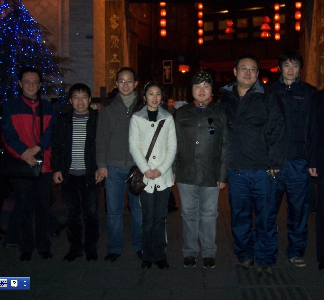

梅凡VS王启超那盘的全谱
首页
茗弈阁
#1 梅凡VS王启超那盘的全谱 作者：越狱行辕 发表时间：2009-11-26 23:28:48
=======上图对应的爱五子棋谱代码如下，以便你拆解：========
h8h9h6i10i6i9g9g8j11i7i8h10j8k8j9j10k10h7f7i12h12f10g10f6k7j6m8l9j4l11l10m10n11l12m13f12f11e11d10e9e10c9g11d9b9d6d8e5c6d5g7i5f5e7e6c5d7c8e8f9b5a4b4h3g3l5l6k5j5k4k6l7l4m5m6k13i11h11g13g12j13d12f13j12i13h13j14k15e12d11d13c14c13e13f14e15d3c7b8c11c10a11b11a9
====================================================== ［ 茗弈小刀 于 2009-11-27 12:29:11 时花20金币送鲜花一朵］
#2 Re:梅凡VS王启超那盘的全谱 作者：茗弈小刀 发表时间：2009-11-27 12:29:48
越狱能小评下就更好了.
#3 Re:梅凡VS王启超那盘的全谱 作者：越狱行辕 发表时间：2009-11-27 17:18:31
这是我第一次参加比赛的第一局也是整个比赛发挥最好的一盘..因为第二天就开始发烧.第三天就送120 了..
米兰大人开局.头一天晚上队友都说 米兰大师极有可能开明星，果然交换过后。对手想了一会，最后还是继续瑞星，从 12 到23手都是定式，13手也可以在3左面活三，但是那路变化我不是很熟，变化复杂，对手又是冠军级人物，我不敢保证对手的骗招，我能破解，事实证明第二盘米兰大人果然走了一路我没见过的变化。
=======上图对应的爱五子棋谱代码如下，以便你拆解：========
h8h9h6i10i6i9g9g8j11i7i8h10j8k8j9j10k10h7f7i12i11
======================================================21也可以这么下到23 之前都是最普通流行的变化24手 我首次碰见是在EMAIL赛
=======上图对应的爱五子棋谱代码如下，以便你拆解：========
h8h9h6i10i6i9g9g8j11i7i8h10j8k8j9j10k10h7f7i12h12f10g10f6i5
======================================================当时比赛是这么下的，不过我只是偶然看见过，记得不是很清楚，也没信心攻的出来。
=======上图对应的爱五子棋谱代码如下，以便你拆解：========
h8h9h6i10i6i9g9g8j11i7i8h10j8k8j9j10k10h7f7i12h12f10g10f6k7j6m8l9j4
======================================================选择空间比较宽阔的进攻方式，是没自信的表现，30手白棋抓住机会进攻，31挡在上面会更强，但当时我并没有发现白棋有很强的进攻。事实证明米兰大人是强大的，35 只有两个防点，36 手的出现一下子把本来觉得黑棋不错的想法打破了，借着和右面的联系白棋向更广阔的空间发展了出来，这时候黑棋彻底落入后手。这里白棋存在VCT.37 试图阻止白棋向下发展 同时为反击埋下伏笔，强悍的38手，这里我想了很久39 很无奈，实在找不到其他的防点，40又是非常强的一手，借着上面的 跳眠三继续向下发展，这我防错了由于太担心白棋上面的空间才下出41
=======上图对应的爱五子棋谱代码如下，以便你拆解：========
h8h9h6i10i6i9g9g8j11i7i8h10j8k8j9j10k10h7f7i12h12f10g10f6k7j6m8l9j4l11l10m10n11l12m13f12f11e11d10e9e10g11e13c9
======================================================白棋这里存在连抓带杀的妙手，不知道当时米兰大师可能落子太快了？忘记了冲四，给我吓出一身冷汗，还好43唯一防，估计看到这手米兰大人很郁闷，但即使这样，白棋下面的空间还是太宽阔了，接下来白棋的进攻是非常精彩的，幸运的每一次，都被我幸运的落到仅有的防点上，这盘是整个比赛我最满意的一盘也在这里，这里双方都用了大量的时间攻防，48手之后白棋的形状太吓人，黑棋只能疲于防守了，49 51
53 都是唯一防，当时我也没考虑那么多，只是考虑在对手进攻的时候设计反，没想到是唯一防54 落下的时候，我飞快了落下55，这时候心里的石头落地了白棋的进攻都被限制了，这里其实还有点小小的欣喜没准。防下来黑棋还有机会，且看白棋如何化解黑棋右下的优势，
=======上图对应的爱五子棋谱代码如下，以便你拆解：========
h8h9h6i10i6i9g9g8j11i7i8h10j8k8j9j10k10h7f7i12h12f10g10f6k7j6m8l9j4l11l10m10n11l12m13f12f11e11d10e9e10c9g11d9b9d6d8e5c6d5g7i5f5e7e6c5d7c8e8f9b5a4b4h3
======================================================64手太漂亮了跳挡黑棋眠三 ，还继续保持先手，64 66 简单的两手就将黑棋的右下的优势化为乌有。我试探的攻击了几手，70手防的很精彩，到这里双方都剩下大概9分钟我提和 米兰大人没同意，接下来棋子落下的速度就加快了，白棋的进攻非常的精彩76！！~~下到82 有个小插曲 ，81 83 手我设计了简单的反杀，当然这么简单的杀对手是不可能看见的 小算盘打错了下到96 的时候，我俩都剩下三分钟左右，我有点害怕，怕被对手把我传说中的拍死。97 本想进攻的同时消耗白棋下面的空间。忽略了 白棋的联系，最后被漂亮的抓了44。
米兰大人没同意，接下来棋子落下的速度就加快了，白棋的进攻非常的精彩76！！~~下到82 有个小插曲 ，81 83 手我设计了简单的反杀，当然这么简单的杀对手是不可能看见的 小算盘打错了下到96 的时候，我俩都剩下三分钟左右，我有点害怕，怕被对手把我传说中的拍死。97 本想进攻的同时消耗白棋下面的空间。忽略了 白棋的联系，最后被漂亮的抓了44。这盘棋，白棋下的非常的精彩，从30手抓住机会，34 36 左右联系，拓展了白棋的进攻空间，38 40 将战场向更宽阔的空间进行。42手漂亮的
#4 Re:梅凡VS王启超那盘的全谱 作者：茗弈小刀 发表时间：2009-11-27 17:53:23
谢谢越狱与大家分享.俺琢磨着要不要把你靓照发出来呢
［ 王志伟123 于 2009-11-28 21:17:11 时花20金币送鲜花一朵］
#5 Re:梅凡VS王启超那盘的全谱 作者：越狱行辕 发表时间：2009-11-27 18:05:45
你不怕吓着别人就发
#6 Re:Re:梅凡VS王启超那盘的全谱 作者：茗弈小刀 发表时间：2009-11-28 9:37:33

大家看哪个是越狱出来的?答对有奖. 冰城的兄弟伙来冒个泡哈.
冰城的兄弟伙来冒个泡哈.
#7 Re:梅凡VS王启超那盘的全谱 作者：测试规则 发表时间：2009-11-28 20:55:15
不是左一就是左二嘛 ［ 茗弈小刀 于 2009-11-29 12:43:26 时花20金币送鲜花一朵］
#8 Re:梅凡VS王启超那盘的全谱 作者：王志伟123 发表时间：2009-11-28 21:21:09
小刀姐，我花送错了 我要送给越狱的，我现在没钱送了，你帮我转送给他好吗
我要送给越狱的，我现在没钱送了，你帮我转送给他好吗［ 茗弈小刀 于 2009-11-29 12:44:54 时花20金币送鲜花一朵］好了弟弟,代他谢谢你.
#9 Re:Re:梅凡VS王启超那盘的全谱 作者：茗弈小刀 发表时间：2009-11-29 12:44:16
引用：
原文由 测试规则 发表于 2009-11-28 20:55:15 :
不是左一就是左二嘛［ 茗弈小刀 于 2009-11-29 12:43:26 时花20金币送鲜花一朵］
左一和左二貌似相差悬殊.
#10 Re:Re:Re:梅凡VS王启超那盘的全谱 作者：测试规则 发表时间：2009-11-29 17:56:50
引用：
原文由 茗弈小刀 发表于 2009-11-29 12:44:16 :
引用：
原文由 测试规则 发表于 2009-11-28 20:55:15 :
不是左一就是左二嘛［ 茗弈小刀 于 2009-11-29 12:43:26 时花20金币送鲜花一朵］
因为左一和左二我都不认识，其他的都认识，所以说不是左一就是左二
左一和左二貌似相差悬殊.
#11 Re:梅凡VS王启超那盘的全谱 作者：耳痛 发表时间：2009-11-30 15:11:34
了，原来你叫王启超。照片上我猜的啊，人如其名，越狱出来的，条纹制服都没换掉！ ［ 茗弈小刀 于 2009-12-5 9:57:37 时花20金币送鲜花一朵］
#12 Re:梅凡VS王启超那盘的全谱 作者：王志伟123 发表时间：2009-11-30 18:31:01
哈哈！嘿嘿是越狱出来了呀！以后小心了！